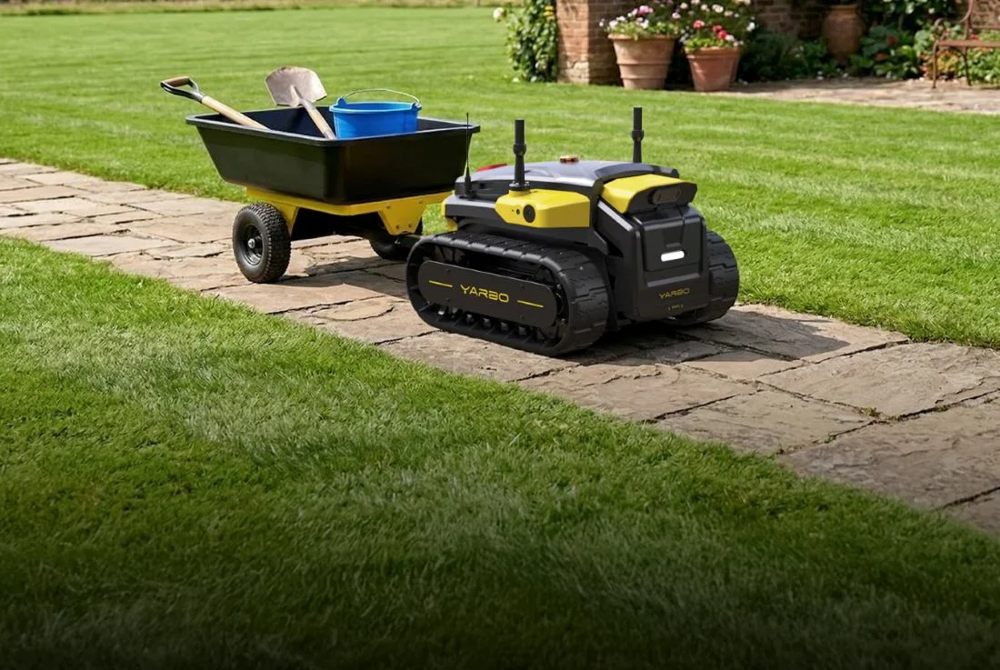
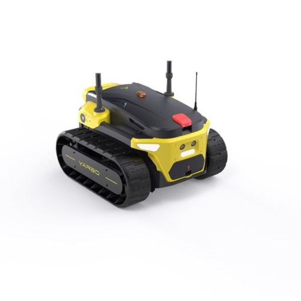
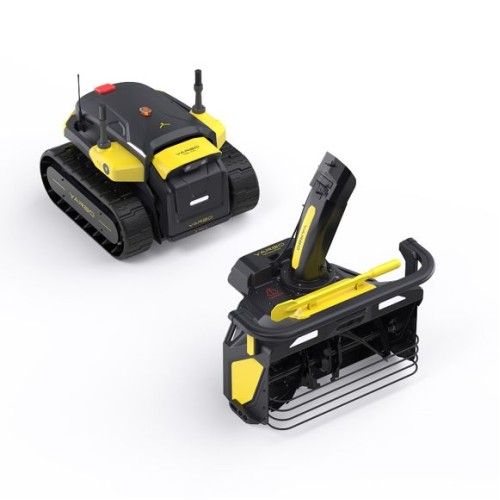
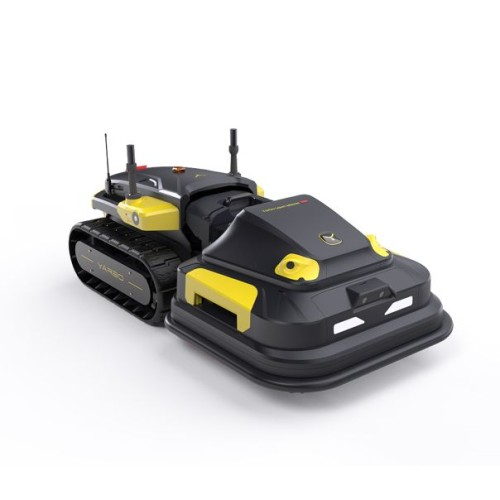
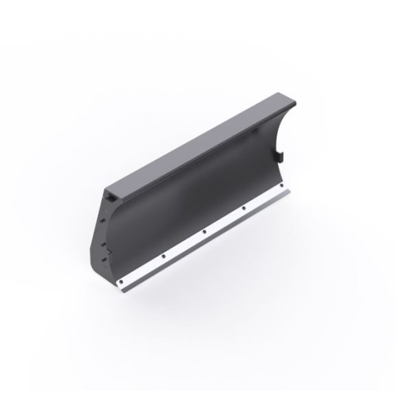
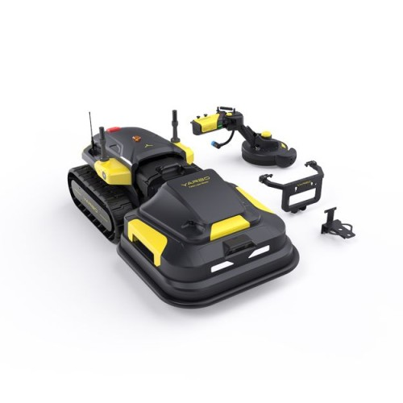
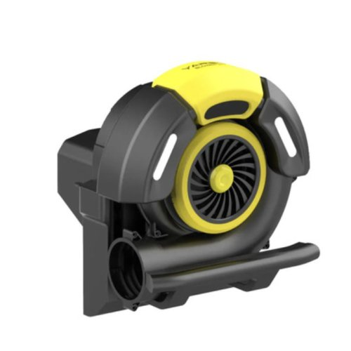
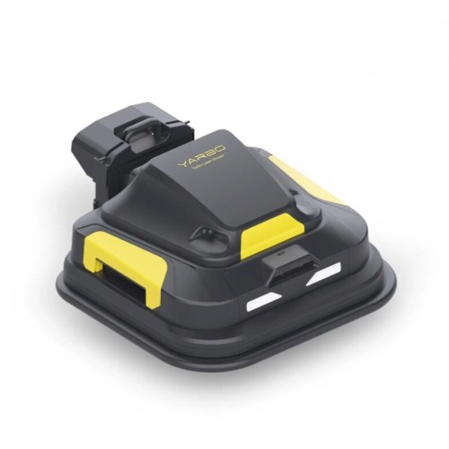
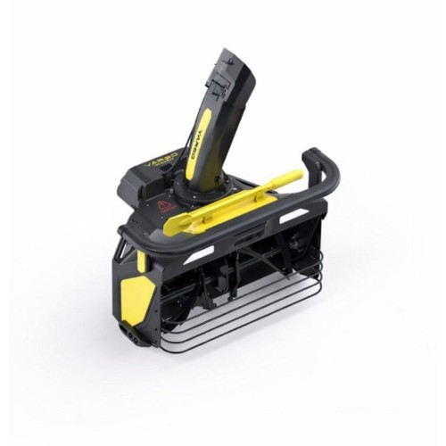

Постройте карту
Задайте рабочие зоны, маршруты и границы территории в приложении.
Зимой — снегоуборщик. Летом — газонокосилка. Меняйте навесной модуль, сохраняя роботизированную базу.

Гусеничная платформа, рабочий модуль и транспортировка инвентаря — в разных сценариях.


Одна роботизированная база, единое приложение и сменное оборудование под сезон. Подберём состав системы с учётом вашего участка.
Задайте рабочие зоны, маршруты и границы территории в приложении.
Подключите нужный модуль и настройте параметры его работы.
Запланируйте работу. После выполнения задачи робот вернётся на зарядку.

Yarbo Snow Blower убирает снег на дорожках, подъездных путях и открытых площадках. Направление выброса настраивается для каждой зоны.
Параметры производителя. Результат зависит от состояния снега и условий участка.
Обсудить мой участокБазовая платформа и готовые роботы из актуального ассортимента. Стоимость указана в рублях и подтверждается перед заказом.

Беспроводная роботизированная база Yarbo для подключения совместимого навесного оборудования.

Готовый роботизированный снегоуборщик для дорожек, подъездных путей и открытых площадок.

Готовая конфигурация Yarbo PRO с газонокосильным модулем для регулярного ухода за газоном.
Ниже собраны позиции Yarbo с изображением, артикулом и ценой.

Отвал для сдвигания снега. Совместимость и крепление подтверждаются для выбранной версии Yarbo.
Запросить подбор
Модуль для обработки кромок и труднодоступных участков территории.
Запросить подбор
Воздуходувный модуль для уборки листьев и лёгкого мусора.
Запросить подбор
Газонокосильный модуль для платформы Yarbo PRO.
Запросить подбор
Снегоуборочный модуль для совместимой роботизированной базы Yarbo.
Запросить подборБазовая беспроводная роботизированная платформа Yarbo.
Запросить подборГотовый беспроводной робот для автоматизированного ухода за газоном.
Запросить подборГотовый беспроводной робот с установленным снегоуборочным оборудованием.
Запросить подборЦены указаны в рублях. Наличие, совместимость, доставка и окончательные условия подтверждаются менеджером перед заказом.
Снегоуборщик, газонокосилка, воздуходувка, триммер и отвал представлены отдельными позициями. Совместимость проверяем по артикулу базы и модуля.
Снегоуборочный модуль для совместимой базы Yarbo.
Газонокосильный модуль для платформы Yarbo PRO.
Воздуходувный модуль для листьев и лёгкого мусора.
Модуль для обработки кромок и труднодоступных мест.
Отвал для сдвигания снега. Крепление зависит от версии платформы.
Тележки, щётки, отвалы и расходные материалы. У прицепной оснастки проверяем крепление, полную массу и тяговое сопротивление.
Прицепная оснастка для перевозки инвентаря и материалов. Масса груза, сцепка и условия маршрута проверяются перед заказом.
Подобрать оснасткуПрицепная щётка для сбора травы и листьев. Подбор сцепки и допустимой нагрузки выполняется отдельно.
Подобрать оснасткуНавесной отвал для сдвигания снега.
Подобрать оснасткуЦены указаны в рублях для соответствующих позиций. Наличие, совместимость, доставка, установка и настройка подтверждаются перед заказом. Позиции без отдельной цены обозначены «по запросу». Окончательные состав, совместимость и стоимость подтверждаем до заказа.
Предоставляем услуги установки, настройки и обслуживания Yarbo и других роботов: размещение зарядной станции, проверка связи, картирование, рабочие зоны, расписания, обучение и техническая поддержка.
Услуги и сопровождениеОсновные параметры для первого знакомства с модулем. Полная спецификация уточняется для выбранной версии оборудования.
| Рабочая ширина Snow Blower | 61 см |
|---|---|
| Высота захвата снега | 30,5 см |
| Дальность выброса | 1,8–12,2 м |
| Навигация | RTK-GPS и датчики окружения |
Поможем выбрать роботизированную платформу, спроектировать автоматизацию или организовать сервис.
Для подбора решения расскажите о площадке, задачах и желаемом сроке запуска.